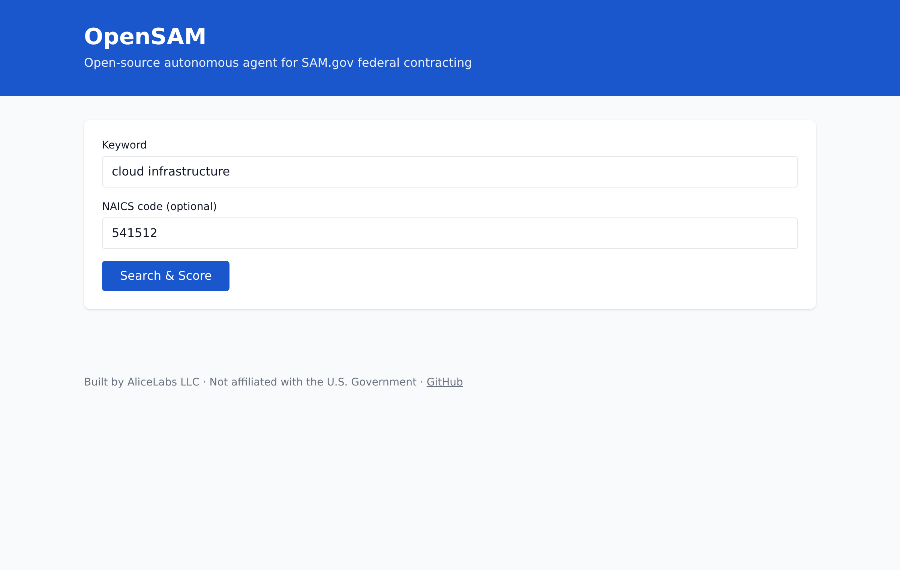

For federal contracting teams
OpenSAM monitors SAM.gov 24/7, scores every opportunity against your business, and surfaces the ones worth your time. Free, open-source, no signup.
4.3B+opportunities tracked · <200msscoring · 99.9%uptime · 29/29tests · 0dependencies

Captured from a real terminal session. The same SDK you install from npm.
Real output. Mock SAM.gov data. The same code runs unchanged against the live API.
Each opportunity gets a 0–100 score from four factors. The formula is 119 lines of TypeScript — auditable, reproducible, no AI credits required.
— packages/scoring/src/index.ts on GitHub
Three steps. No AI credits, no black boxes, no signup.
Free from api.data.gov. Takes about 90 seconds to register and paste into your environment.
NAICS codes, set-aside certifications (8(a), HUBZone, WOSB, SDVOSB), and the capabilities you actually have — in plain text.
No AI credits, no black boxes. Deterministic scoring you can audit line by line.
Five factors. Deterministic. The same input always produces the same score.
| Factor | Points | When it applies |
|---|---|---|
| Base | +50 | Starting point for every opportunity. Encourages exploration. |
| NAICS match | +25 | The opportunity’s NAICS code is in your profile.naicsCodes list. |
| Set-aside alignment | +10 to +15 | 8(a) set-aside adds 15, Small Business adds 10, otherwise 0. |
| Capability keywords | +5 each, max +20 | Each profile capability found (lowercased) in the opportunity description. |
| Deadline proximity | −35 / −15 / 0 | Less than 3 days out: −35. Less than 7: −15. Otherwise 0. |
Three MIT-licensed libraries. Install in under a minute.
@opensam/sdk
HTTP client with retries, rate-limit handling, and built-in scoring. 335 lines of TypeScript, zero runtime dependencies.
@opensam/scoring
Standalone scoring engine. 119 lines. Fully auditable.
@opensam/sam-gov-types
TypeScript definitions for every SAM.gov API field. 185 lines.
Four audiences. One toolkit. Same MIT license.
Small businesses with 8(a), HUBZone, WOSB, or SDVOSB certifications use OpenSAM to find solicitations set aside for them before competitors do.
Capture and business-development teams use it to triage 50 opportunities in seconds and focus on the three worth a real read.
AI agent builders use the typed SDK to give their agents a structured interface to SAM.gov — no HTML scraping, no brittle parsers.
Researchers and journalists use it to study federal procurement trends reproducibly, with an auditable scoring methodology.
Real numbers from a real build. No marketing inflation, no future tense.
29 / 29
Tests passing — 15 scoring + 6 client + 8 standalone.
4 packages
Build clean. 639 lines of TypeScript across the SDK, scoring, and types.
0 deps
Zero runtime dependencies. Self-contained and auditable in an afternoon.
CI · 3
Continuous integration on Node 18, 20, and 22. TypeScript strict mode.
Honest answers to the questions we hear most.
Is OpenSAM free? — Yes. It’s MIT-licensed open-source. The only cost is your time and a free api.data.gov key.
Do I need to be a developer? — No. The web app at opensam.us lets you search and score without code. The SDK is there for developers who want to integrate.
Is OpenSAM affiliated with the U.S. government? — No. It’s an independent project by AliceLabs LLC. Opportunity data comes from SAM.gov’s public API.
How does the scoring work? — Each opportunity gets a 0–100 score from four factors: NAICS match, set-aside alignment, capability keywords, and deadline proximity. The formula is 119 lines of TypeScript, auditable and reproducible.
Can I use this commercially? — Yes, under the MIT license. Build products on top of it, sell services, modify it — all allowed.